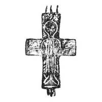
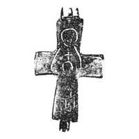

Catalog › CE-0248 · KOR2003-I.2.7
Encolpion cu capete drepte; sfânt în poziție de Orantă pe față, Maica Domnului cu Pruncul pe revers
sec. X–XII (901–1200) · Gnezdovo, regiunea Smolensk, Rusia · Muzeul de Istorie de Stat, Moscova (GIM), secția de arheologie, inv. ГИМ 105291; 2538/186
double-sided reliquary cross (enkolpion), aramă; c. X–XII (901–1200); found at Gnezdovo, regiunea Smolensk, Rusia; kept at Muzeul de Istorie de Stat, Moscova (GIM), secția de arheologie.




Identificare
- Categorie
- Encolpion bivalv (relicvar)
- Material
- Aramă
- Tehnică
- Turnare în relief; Gravare (incizie)
- Dimensiuni
- Î 61 × L 41 mm
Iconografie
- Avers
- Neidentificat
- Descriere avers
- Pe valva de față imaginea unui sfânt în poziție de Orantă, în veșmânt bogat ornamentat; trăsăturile feței sfântului fie sunt șterse, fie au rămas de la început neprelucrate. Inscripție adâncită deasupra capului sfântului – IAONHC.
- Revers
- Maica Domnului cu Pruncul
- Descriere revers
- Pe valva de revers s-au păstrat parțial contururile imaginii Maicii Domnului în picioare și ale Pruncului în fața ei.
- Inscripții
- IAONHC
- Limba
- Greacă
Datare și atribuire
- Datare
- sec. X–XII (901–1200)
- Centru
- Necunoscut
- Tipologie
- Korzukhina–Peskova 2003, tip I 2
Descoperire
- Localitate
- Gnezdovo
- Regiune
- regiunea Smolensk
- Țară
- Rusia
- Context
- Așezare
- Anul
- 1970
Păstrare și referințe
- Colecție
- Muzeul de Istorie de Stat, Moscova (GIM), secția de arheologie
- Nr. inventar
- ГИМ 105291; 2538/186
- Bibliografie
- G. F. Korzukhina, A. A. Peskova, Древнерусские энколпионы. Нагрудные кресты-реликварии XI–XIII вв., Sankt-Petersburg, 2003 [Korzukhina–Peskova 2003], p. 54, cat. nr. I 2/7, reprodusă la Табл. 11 (planșe, p. 253). Bibliografie citată în sursă: Асташова 1974, 249–251; Куницький 1990, рис. 4, 3 (în legendele de sub desene sunt încurcate numerele crucilor din Gnezdovo și Bulgaria); Путь из варяг, с. 347–348, № 344.
- Figura
- Табл. 11
- Planșe
- Korzukhina–Peskova 2003, Табл. 11 (planșă fără paginație proprie în PDF; p. 253 tipărită)
- Observații
- Datare după Peskova: sec. X–XII. Circumstanțe: Săpături 1970 la așezare, sub conducerea lui D. A. Avdusin. Dimensiuni: h 7,6 cm cu balamalele. Encolpion cu capete drepte, puțin lărgite în sus și în jos, cu imagini executate cu linii adâncite. Coordonate: nu sunt date în sursă.
Citare: Corpus Encolpiorum, CE-0248, Encolpion cu capete drepte; sfânt în poziție de Orantă pe față, Maica Domnului cu Pruncul pe revers, --root/piese/KOR2003-I.2.7/ (accesat 2026-10-20).